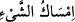

cesedlere bağlanmaları (taalluk) emri verilince, ruhlar cesedlerle perdelenmekten
dolayı daralıp sıkıldı. Bu sebeple Allah ruhların melekût âleminde seyr etmesi için uyku
ve insilâh hallerini yarattı ki ruhların müşâhedeleri devamlı yenilenmiş olsun ve
Mevlâ’ya yakınlığa rağbetleri artsın. Kul ancak uykuda istirahat eder ve lezzet bulur.
Çünkü o Allah’ın elindedir. O, merhametlilerin en merhametlisidir. Ölüm sırasında ise
sıkıntı çeker ve elem duyar. Çünkü ölüm meleğinin elindedir. O ise yaratılmış olanların
en şiddetlisidir.
“Ölümüne hükmettiği canı alır” “__WORD__ bir şeyi tutmak ve onu korumak, “__WORD__
ise hükmetmek demektir. Yâni Allah, ölülerin ruhlarını kendi yanında tutup bedenine
geri göndermez. Bu ‘tutma’, ruhların dünyadaki hayatlarından ayrıldıktan sonra
bulundukları yer olan berzah âleminde gerçekleşir. Bu berzah, mücerred ruhlar ile
cisimler arasındaki berzahtan, yâni, uyku veya insilah halleri sâyesinde girilen misâl
âleminden başkadır. Çünkü varlıktaki yükselip alçalmalar (tenezzülât-maâric)
devrî/dâirevîdir. Dünyadaki yaratılıştan evvelki mertebe, alçalma mertebelerinden olup
onun
öncelik
özelliğine
sâhiptir.
Bundan
sonraki
mertebe
ise
yükseliş
mertebelerindendir ve sonralık özelliğine sâhiptir.
Yine son berzahta ruhlara katılan sûretler ancak dünyada iken yapılmış amel ve
fiillerin sûretleridir. Ancak ilk berzahtaki sûretler böyle değildir. Bu iki berzahtan
hiçbiri diğerinin aynısı değildir. Fakat ikisi, âlemdeki sûretlerin misâlini içeren, maddî
olmayan, nûrânî cevher ve rûhânî âlem olmak bakımından müşterektirler.
“Ötekini muayyen bir vakte kadar bırakır” yâni uyumakta olan dirilerin nefislerini
uyandıkları ve mukayyed misâl âleminden indikleri sırada bedenlerine gönderir. Misal
âlemi hissedilen ve bir miktara sâhip olma bakımından cismânî cevhere benzer. Nûrânî
oluşu bakımından da mücerred aklî cevhere benzer. Allah Teâlâ, misal âlemini önce
tecessüd etsin/cesede bürünsün sonra da kesâfet kazansın diye vasat/arada, iki tarafa da
benzer bir âlem kılmıştır. Görmez misin ki mücerred bir şey olan ilmin hakîkati misal
âleminde süt sûretinde tecessüd eder.
“Muayyen bir vakit” ruhların ölümü için takdir edilmiş vakittir. Bu vakit şahıs için
değil ‘ruhları bırakma’ fiilinin cinsi için sonu ifâde eder. Eğer şahıs için olsaydı ilk
uyanıştan sonra bir daha uyku vâki olmaması gerekirdi.
Sa’îd b. Cübeyr (r.h.)’den rivâyet edilmiştir ki: “Ölülerin ruhları ile dirilerin ruhları
uyku sırasında buluşur ve Allah’ın dilediği kadar birbirleriyle tanışırlar. Sonra ölümüne
hükmettiğini yanında tutar, ötekileri de hayat süresinin sona ereceği zamana kadar
cesedlerine salıverir.”
el-Es’iletü’l-müfhıme’de şöyle der: “Allah uyku hâlinde ruhu kabz eder. Sonra da
sâhibinin ölümüne hükmettiği, uykusu eceline denk gelen ruhu tutar.” Buna göre “canı
alır/tutar” ifâdesi, “ölmeyenleri de” ifâdesine bağlı olmuş olmaktadır. Hz. Peygamber
(a.s.)’ın şu hadîsi de bunu destekler: “Biriniz yatağına yatacağı zaman elbisesinin bir
ucuyla yatağını silkelesin. Çünkü yatağından ayrıldıktan sonra oraya hangi
zararlının girdiğini bilemez. Sonra da şöyle duâ etsin: